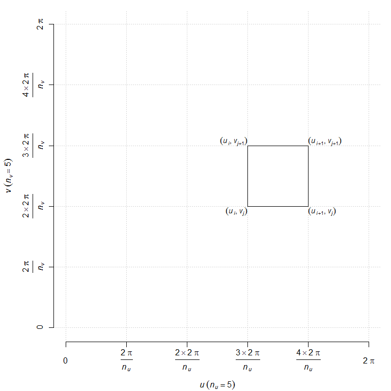
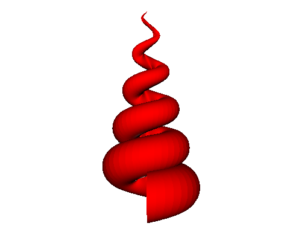
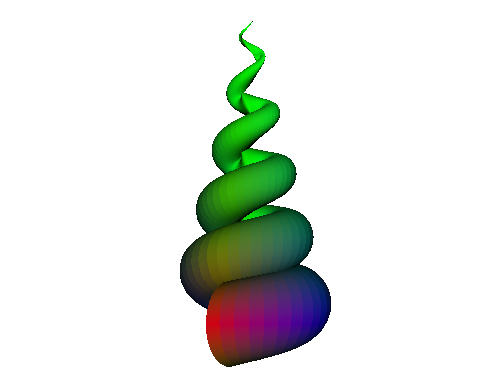

Parametric surface with OpenGL in Haskell
In this blog post, I will show how to draw a parametric surface with the Haskell OpenGL library.
We will take as example the following function with two variables \(u\) and \(v\) and depending on a parameter \(n\):
\[ f_n(u,v) = \begin{pmatrix} \sin\Bigl(n v + \dfrac{\pi}{2}\Bigr) \left(\Bigl(1-\dfrac{v}{2\pi}\Bigr)(1 - \cos u) -0.2 \right) \\ \dfrac{4v}{\pi} \Bigl(1-\dfrac{v}{2\pi}\Bigr) \sin u \\ \cos\Bigl(n v + \dfrac{\pi}{2}\Bigr) \left(\Bigl(1-\dfrac{v}{2\pi}\Bigr)(1 - \cos u) +0.2 \right) \end{pmatrix} \] for \(0 \leq u \leq 2\pi\) and \(0 \leq v \leq 2\pi\). It draws a conical spiral (see the images below).
Firslty, we define this function in Haskell:
function :: Double -- parameter n
-> Double -> Double -- variables u and v
-> [Double] -- result vector
function n u v = [x, y, z]
where
x = sin(n*v+0.5*pi) * ((1-0.5*v/pi) * (1-cos u) - 0.2)
y = 4*v/pi + (1-0.5*v/pi) * sin u
z = cos(n*v+0.5*pi) * ((1-0.5*v/pi) * (1-cos u) + 0.2)We will evaluate the function \(f_n\) at the corners of each square of a grid like the one show below:

This is done by the Haskell function quad below, which returns a pair made of a four-tuple of Vertex3 and the normal. To get the normal, we use the helper function triangleNormal which computes the cross product.
import Graphics.Rendering.OpenGL.GL (Normal3 (..), Vertex3 (..))
triangleNormal :: Floating a => (Vertex3 a, Vertex3 a, Vertex3 a) -> Normal3 a
triangleNormal (Vertex3 x1 x2 x3, Vertex3 y1 y2 y3, Vertex3 z1 z2 z3) =
Normal3 (a/norm) (b/norm) (c/norm)
where
(a, b, c) = crossProd (y1-x1, y2-x2, y3-x3) (z1-x1, z2-x2, z3-x3)
crossProd (a1,a2,a3) (b1,b2,b3) = (a2*b3-a3*b2, a3*b1-a1*b3, a1*b2-a2*b1)
norm = sqrt (a*a + b*b + c*c)
quad :: (Double -> Double -> Double -> [Double]) -- the function
-> Double -- parameter n
-> [Double] -> [Double] -- sequences of u and v
-> Int -> Int -- indices
-> ((Vertex3 Double, Vertex3 Double, Vertex3 Double, Vertex3 Double),
Normal3 Double)
quad f n u_ v_ i j = ((a, b, c, d), norm)
where
(a,b,c,d) = ( toVx3 $ f n (u_!!i) (v_!!j)
, toVx3 $ f n (u_!!i) (v_!!(j+1))
, toVx3 $ f n (u_!!(i+1)) (v_!!(j+1))
, toVx3 $ f n (u_!!(i+1)) (v_!!j) )
norm = triangleNormal (a, b, c)
toVx3 x = Vertex3 (x!!0) (x!!1) (x!!2)Now we compute all the quad’s for two given integers defining the grid:
allQuads :: Int -> Int -- numbers of subdivisions for u and v
-> Double -- parameter n
-> [((Vertex3 Double, Vertex3 Double, Vertex3 Double, Vertex3 Double),
Normal3 Double)]
allQuads n_u n_v n =
map (uncurry (quad function n seq_u seq_v))
[(i,j) | i <- [0 .. n_u-1], j <- [0 .. n_v-1]]
where
seq_u,seq_v :: [Double]
seq_u = [2*pi * frac i n_u | i <- [0 .. n_u]]
seq_v = [2*pi * frac i n_v | i <- [0 .. n_v]]
frac :: Int -> Int -> Double
frac p q = realToFrac p / realToFrac qNow we make a standard OpenGL program. We allow the user to use the keyboard for some controls: rotating the scene and increasing/decreasing the parameter \(n\).
module ConicalSpiral.ConicalSpiral2 where
import ConicalSpiral.Data2
import Data.IORef
import Graphics.Rendering.OpenGL.GL
import Graphics.UI.GLUT
white,black,red :: Color4 GLfloat
white = Color4 1 1 1 1
black = Color4 0 0 0 1
red = Color4 1 0 0 1
display :: IORef GLfloat -> IORef GLfloat -> IORef GLfloat -- rotations
-> IORef GLdouble -- parameter n
-> IORef GLdouble -- zoom
-> DisplayCallback
display rot1 rot2 rot3 n zoom = do
clear [ColorBuffer, DepthBuffer]
n' <- get n
r1 <- get rot1
r2 <- get rot2
r3 <- get rot3
z <- get zoom
(_, size) <- get viewport
let surface = allQuads 200 200 n'
loadIdentity
resize z size
rotate r1 $ Vector3 1 0 0
rotate r2 $ Vector3 0 1 0
rotate r3 $ Vector3 0 0 1
renderPrimitive Quads $ do
materialDiffuse FrontAndBack $= red
mapM_ drawQuad surface
swapBuffers
where
drawQuad ((v1,v2,v3,v4),norm) = do
normal norm
vertex v1
vertex v2
vertex v3
vertex v4
resize :: Double -> Size -> IO ()
resize zoom s@(Size w h) = do
viewport $= (Position 0 0, s)
matrixMode $= Projection
loadIdentity
perspective 45.0 (w'/h') 1.0 100.0
lookAt (Vertex3 0 0 (-15+zoom)) (Vertex3 0 2 0) (Vector3 0 1 0)
matrixMode $= Modelview 0
where
w' = realToFrac w
h' = realToFrac h
keyboard :: IORef GLfloat -> IORef GLfloat -> IORef GLfloat -- rotations
-> IORef GLdouble -- parameter n
-> IORef GLdouble -- zoom
-> KeyboardCallback
keyboard rot1 rot2 rot3 n zoom c _ =
case c of
'b' -> n $~! subtract 0.1
'n' -> n $~! (+ 0.1)
'e' -> rot1 $~! subtract 1
'r' -> rot1 $~! (+1)
't' -> rot2 $~! subtract 1
'y' -> rot2 $~! (+1)
'u' -> rot3 $~! subtract 1
'i' -> rot3 $~! (+1)
'm' -> zoom $~! (+1)
'l' -> zoom $~! subtract 1
'q' -> leaveMainLoop
_ -> return ()
idle :: IdleCallback
idle = postRedisplay Nothing
main :: IO ()
main = do
_ <- getArgsAndInitialize
_ <- createWindow "Conical Surface"
windowSize $= Size 500 500
initialDisplayMode $= [RGBAMode, DoubleBuffered, WithDepthBuffer]
clearColor $= white
materialAmbient FrontAndBack $= black
materialShininess FrontAndBack $= 95
materialSpecular FrontAndBack $= white
lighting $= Enabled
lightModelTwoSide $= Enabled
light (Light 0) $= Enabled
position (Light 0) $= Vertex4 0 0 (-100) 1
ambient (Light 0) $= black
diffuse (Light 0) $= white
specular (Light 0) $= white
depthFunc $= Just Less
shadeModel $= Smooth
n <- newIORef 5.0
rot1 <- newIORef 0.0
rot2 <- newIORef 0.0
rot3 <- newIORef 0.0
zoom <- newIORef 0.0
displayCallback $= display rot1 rot2 rot3 n zoom
reshapeCallback $= Just (resize 0)
keyboardCallback $= Just (keyboard rot1 rot2 rot3 n zoom)
idleCallback $= Just idle
putStrLn "*** Haskell OpenGL Conical Spiral ***\n\
\ To quit, press q.\n\
\ Scene rotation:\n\
\ e, r, t, y, u, i\n\
\ Zoom: l, m\n\
\ Increase/decrease parameter: n, b \n\
\"
mainLoopAnd this is the result:

We have chosen to render the conical spiral in red. We can include colors. A possible way to do so is to compute the average value of the quad, normalize it and consider the result as a RGB code:
import Graphics.Rendering.OpenGL.GL (Color4 (..), GLfloat, Vertex3 (..))
type Quad = (Vertex3 Double, Vertex3 Double, Vertex3 Double, Vertex3 Double)
colMeans :: Quad -> (Double, Double, Double)
colMeans quad = (x/m , y/m, z/m)
where
(a, b, c, d) = quad
Vertex3 a1 a2 a3 = a
Vertex3 b1 b2 b3 = b
Vertex3 c1 c2 c3 = c
Vertex3 d1 d2 d3 = d
x = abs (a1 + b1 + c1 + d1)
y = abs (a2 + b2 + c2 + d2)
z = abs (a3 + b3 + c3 + d3)
m = x + y + z
quadColor :: Quad -> Color4 GLfloat
quadColor quad =
Color4 (realToFrac x) (realToFrac y) (realToFrac z) 1
where
(x,y,z) = colMeans quadThen, in our display function:
......
renderPrimitive Quads $ mapM_ drawQuad surface
swapBuffers
where
drawQuad ((v1,v2,v3,v4),norm) = do
materialDiffuse FrontAndBack $= quadColor (v1,v2,v3,v4)
normal norm
vertex v1
vertex v2
vertex v3
vertex v4And this is the result:

The full code is available in this Github repo.